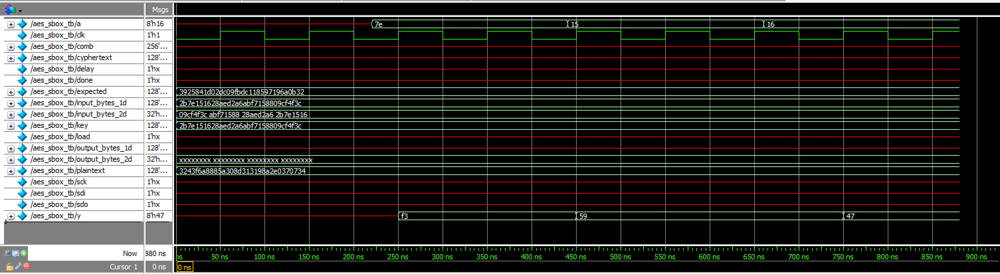
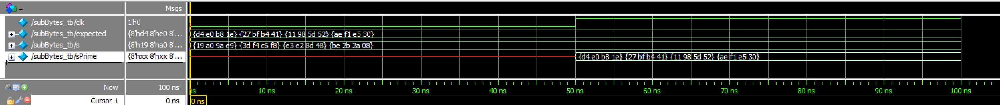

Lab 7: The Advanced Encryption Standard (AES)
Introduction
The goal of this lab is to use our FPGA as a hardware accelerator to perform AES-128 encryption with plaintext and key provided by our MCU.
MCU Design
All of the MCU Code was provided for this lab from the E155 Lab 7 Starter Code Repository. Thus, the work done for this lab was for building the FPGA hardware accelerator below.
FPGA Design
Objective
The objective of this lab is to use SPI to send a plaintext and key from our MCU to our FPGA, use our FPGA as a hardware accelerator to do AES-128 encryption, and then send the encrypted ciphertext back to the MCU via SPI.
Design
AES Encryption
The encryption method we are using is AES-128 according to the NIST FIPS-197 specification. For this lab, I will be creating it by following the following pseudocode:
For the key expansion module, I will be following the pseudocode below:
The logic for each of the modules that I write can be found in the NIST FIPS-197 documentation.
Block Diagram
My approach for this lab was to have a module for each of the sections of the NIST FIPS-197 documentation. The top level aes.sv module uses the onboard HSOSC 48 MHz clock and receives the key and plaintext via SPI from the MCU and then does the encryption. Then it sends the encrypted ciphertext back to the MCU via SPI. Belows is my block diagram for this lab:

AES Core FSM
FSM Overview
The AES core FSM was designed with 9 states (S0-S8) to implement the AES-128 encryption algorithm according to FIPS-197. The FSM orchestrates the encryption process through an initial round, 9 regular rounds, and a final round, accounting for the pipeline delays introduced by synchronous S-box lookups.
Design Rationale
The state machine accounts for pipeline delays from synchronous operations: - SubBytes delay: 1 cycle (sbox_sync uses block RAM) - KeyExpansion delay: 2 cycles total (1 for subWord sbox, 1 for final register)
These delays necessitate wait states between operations to ensure data is ready before proceeding. The design prioritizes correctness and synchronization over speed, completing full AES-128 encryption in 11 clock cycles (including the load cycle).
State Utilization
Currently using 4 bits of state representation for 9 states, leaving 7 unused states. This is acceptable because: - Clear state encoding improves debuggability - Minimal hardware cost for extra flip-flops - Could potentially optimize to 3 bits (since 2³ = 8 < 9 < 16 = 2⁴), but would need special handling
FSM State Transition Diagram

aes_core FSM State Transition DiagramState Transition Table
| Current State | Condition | Next State | Description |
|---|---|---|---|
| S0 | Always | S1 | Initial AddRoundKey complete, SubBytes starts |
| S1 | Always | S2 | Wait 1 cycle for SubBytes (sbox_sync) |
| S2 | Always | S3 | Wait 1 cycle for KeyExpansion (subWord sbox) |
| S3 | Always | S4 | Wait 1 cycle for key register |
| S4 | round < 9 |
S1 | Continue to next regular round (rounds 1-9) |
| S4 | round == 9 |
S5 | Move to final round (round 10) |
| S5 | Always | S6 | Final SubBytes starts |
| S6 | Always | S7 | Wait for final key expansion |
| S7 | Always | S8 | Final AddRoundKey complete |
| S8 | Always | S8 | Stay in done state |
Output Control Tables
State Actions
| State | Actions | Notes |
|---|---|---|
| S0 | currentState <= addRoundKeyDone |
Capture initial AddRoundKey result |
| S1 | (none) | Wait for SubBytes pipeline |
| S2 | (none) | Wait for KeyExpansion pipeline |
| S3 | (none) | Wait for key register pipeline |
| S4 | currentKey <= keyExpansionDonecurrentState <= addRoundKeyDoneif (round == 9) savedFinalKey <= keyExpansionDoneif (round < 9) round++ |
Capture expanded key and state Save round-10 key when finishing round 9 Increment round counter |
| S5 | finalLeftReg <= shiftRowsDone |
Save ShiftRows output (skip MixColumns) |
| S6 | (none) | Wait for final key expansion |
| S7 | currentState <= addRoundKeyDone |
Final AddRoundKey result |
| S8 | done <= 1 |
Assert done signal |
Datapath Multiplexer Controls
bypassMuxResult (input to AddRoundKey)
| State | Mux Output | Purpose |
|---|---|---|
| S0 | plainTextState |
Initial round uses plaintext |
| S4 | mixColumnsDone |
Regular rounds include MixColumns |
| S7 | finalLeftReg |
Final round skips MixColumns |
| Other | currentState |
Default (maintain state) |
keyMuxOut (key input to AddRoundKey)
| State | Mux Output | Purpose |
|---|---|---|
| S0 | initialKeyState |
Use original cipher key |
| S7 | finalKeyState |
Use saved round-10 key |
| Other | keyState |
Use current expanded key |
Testbench Simulation and Testing
Testbench Design and Results
To test my code and see whether it would work as expected, I created a testbench to test before moving on to using physical hardware. I created a testbench for each of my modules, testing a different functionality of this lab with east testbench. Due to the large number of modules that I have in this lab, I am not posting the code in this writeup, but each testbench can be found in my Lab 7 Github Repo.
Each of the testbenches were done by using the stim/assert method or checking if the outputs match the expected value, to ensure functionality automatically, without having to analyze the waveforms carefully to see if it worked or not.
addRoundKey_tb results:
addRoundKey WaveformsaddRoundKey Transcriptaes_core_tb results:
This testbench tests if encryption works correctly.

aes_core Waveforms
aes_core Transcriptaes_sbox_tb results:
This testbench demonstrates 1-cycle latency of RAM blocks doing s-box substitution

aes_sbox_tb Waveformsaes_spi results:
This testbench tests encryption with SPI functionality.

aes_spi Waveforms
aes_spi Transcriptgaloismult_tb results:
galoismult Waveformsgaloismult Transcriptinput2State_tb results:
input2State Waveformsinput2State TranscriptkeyExpansion_tb results:
keyExpansion WaveformskeyExpansion Transcriptmixcolumn_tb results:
mixcolumn Waveformsmixcolumn Transcriptmixcolumns_tb results:
mixcolumns Waveformsmixcolumns TranscriptrotWord_tb results:
rotWord_tb WaveformsrotWord_tb Transcriptsbox_tb results:
This testbench tests the non synchronized sbox module
sbox Waveforms
sbox TranscriptshiftRows_tb results:
shiftRows WaveformsshiftRows Transcriptstate2Output_tb results:
state2Output Waveformsstate2Output TranscriptsubBytes_tb results:

subBytes WaveformssubBytes TranscriptsubWord_tb results:
subWord WaveformssubWord TranscriptThus, all testbenches and testing for this lab was successful!
Hardware
Design and Schematic
After finishing with testing, I can now build my hardware and program my FPGA and MCU. Our E155 Development board has onboard SPI connections for SPI between the FPGA and MCU, so we do not need to use any breadboarding. Thus, a schematic is not necessary. Below are all the pins we are using.
| Name | MCU Pin | FPGA Pin |
|---|---|---|
| CE | PA11 |
— |
| SCK | PB3 |
P21 |
| CIPO | PB4 |
P12 |
| COPI | PB5 |
P10 |
| LOAD | PA5 |
P26 |
| DONE | PA6 |
P27 |
| SUCCESS_LED | PA9 |
— |
| FAIL_LED | PA10 |
— |
Results
After finishing with the design, I was able to program my FPGA and MCU. I used a logic analyzer to confirm that the SPI transaction worked correctly.
Below is the Logic Analyzer SPI Transaction:

Within my logic analyzer transaction, I can also confirm that I have the correct values for my plaintext, key, and ciphertext. Below are logic analyzer pictures for the first four values of each:


As a result, my design and project has met all the requirements for this lab.
AI Prototype
Prompt 1
To test how AI would do for this lab, I entered the following prompt to ChatGPT:
Write SystemVerilog HDL to implement the KeyExpansion logic described in the FIPS-197 uploaded document. The module should be purely combinational, using the previous key and current round number to calculate the next key. Assume other required modules (SubWord and RotWord) are already implemented.AI Code
As a result, it returned the following code:
// -----------------------------------------------------------------------------
// AES-128 KeyExpansion (next round key)
// Combinational: next_key = KeyExpansion(prev_key, round_num)
// References: FIPS-197 §5.2 KEYEXPANSION(), Alg.2; Table 5 (Rcon)
// Assumptions:
// - prev_key layout: {w0, w1, w2, w3} with w0 at [127:96] and w3 at [31:0]
// - Round numbers are 1..10 for AES-128.
// - Modules RotWord and SubWord exist and are purely combinational:
// module RotWord(input logic [31:0] in, output logic [31:0] out);
// module SubWord(input logic [31:0] in, output logic [31:0] out);
// -----------------------------------------------------------------------------
module AesKeyExpansion128 (
input logic [127:0] prev_key, // previous round key (K_round)
input logic [3:0] round_num, // 1..10
output logic [127:0] next_key // next round key (K_round+1)
);
// Split previous 128-bit key into 4 words
logic [31:0] w0, w1, w2, w3;
assign {w0, w1, w2, w3} = prev_key;
// Temp = SubWord(RotWord(w3)) ^ Rcon[round_num] (FIPS-197 §5.2)
logic [31:0] rotw, subw, rcon, temp;
RotWord u_rot (.in(w3), .out(rotw));
SubWord u_sub (.in(rotw), .out(subw));
// Round constants Rcon[j] = {rc,00,00,00} for j=1..10 (Table 5)
function automatic logic [31:0] rcon_lut(input logic [3:0] j);
unique case (j)
4'd1: rcon_lut = 32'h01_00_00_00;
4'd2: rcon_lut = 32'h02_00_00_00;
4'd3: rcon_lut = 32'h04_00_00_00;
4'd4: rcon_lut = 32'h08_00_00_00;
4'd5: rcon_lut = 32'h10_00_00_00;
4'd6: rcon_lut = 32'h20_00_00_00;
4'd7: rcon_lut = 32'h40_00_00_00;
4'd8: rcon_lut = 32'h80_00_00_00;
4'd9: rcon_lut = 32'h1B_00_00_00;
4'd10: rcon_lut = 32'h36_00_00_00;
default: rcon_lut = 32'h00_00_00_00; // safe default
endcase
endfunction
assign rcon = rcon_lut(round_num);
assign temp = subw ^ rcon;
// Next words (AES-128):
// w4 = w0 ^ temp
// w5 = w1 ^ w4
// w6 = w2 ^ w5
// w7 = w3 ^ w6
logic [31:0] nw0, nw1, nw2, nw3;
assign nw0 = w0 ^ temp;
assign nw1 = w1 ^ nw0;
assign nw2 = w2 ^ nw1;
assign nw3 = w3 ^ nw2;
assign next_key = {nw0, nw1, nw2, nw3};
endmoduleTest in Questa
I tried to fix the code and run my testbench, but I could not get the testbench to run as one of the inputs is the round number not the rcon value, and for my code, I have it so that my aes_core file calculates rcon based on the round number and feeds it into keyEpxansion.

Modular Prompts
I then ran the second prompt by the pseudocode. I used the following prompt:
Write SystemVerilog HDL to implement the following logic:
i = 0
while i < Nk do
w[i] <- key[4*i..4*i+3]
i <- i+1
end while
while i <= 4 * Nr + 3 do
temp <- w[i-1]
if i mod Nk = 0 then
temp <- module1(module2(temp)) (+) Rcon[i/Nk]
else if Nk > 6 and i mod Nk = 4 then
temp <- module1(temp)
end if
w[i] <- w[i-Nk] (+) temp
i <- i + 1
end while
return w
Assume module1 and module2 are existing modules that can be instantiated. (+) refers to XOR. Unwrap the loop in the provided pseudo code so it uses the previous iterations output to generate the new iteration.
Do not use any existing knowledge of the AES specifications in your answer.AI Code Result
ChatGPT gave me the following code.
// ------------------------------------------------------------
// Key-like expansion (fully combinational, loop "unrolled")
// Mirrors the provided pseudo-code without using any AES spec.
//
// PSEUDO (for reference):
// i = 0
// while i < Nk do
// w[i] <- key[4*i..4*i+3]
// i <- i+1
// end while
// while i <= 4 * Nr + 3 do
// temp <- w[i-1]
// if i mod Nk = 0 then
// temp <- module1(module2(temp)) (+) Rcon[i/Nk]
// else if Nk > 6 and i mod Nk = 4 then
// temp <- module1(temp)
// end if
// w[i] <- w[i-Nk] (+) temp
// i <- i + 1
// end while
// return w
// ------------------------------------------------------------
module keyExpansion #(
parameter int NK = 4, // number of initial key words
parameter int NR = 10 // used to size total output words
) (
// Initial key as words: key_words[i] corresponds to key[4*i .. 4*i+3]
input logic clk,
input logic [31:0] key_words [0:NK-1],
// Rcon array: only entries actually used are those at indices i/NK
// for i in [NK .. (4*NR+3)], when (i % NK) == 0.
// Size it to at least ( (4*NR+3) / NK ).
input logic [31:0] rcon [0:((4*NR+3)/NK)],
// Expanded words w[0 .. 4*NR+3]
output logic [31:0] w [0:(4*NR+3)]
);
// Total number of output words
localparam int WORDS = 4*NR + 4;
// Internal wire array for the chain
logic [31:0] w_int [0:WORDS-1];
// ---- First segment: copy initial key words ----
genvar k;
generate
for (k = 0; k < NK; k++) begin : INIT
// w[k] <- key[4*k .. 4*k+3]
assign w_int[k] = key_words[k];
end
endgenerate
// ---- Second segment: generate remaining words, unrolled ----
// For each i in [NK .. WORDS-1], compute per the pseudo-code.
genvar i;
generate
for (i = NK; i < WORDS; i++) begin : EXPAND
// temp <- w[i-1] (base)
wire [31:0] base_temp = w_int[i-1];
// Parallel evaluations needed for conditional paths:
// A) module1(module2(temp))
// B) module1(temp)
// We build both and select by static conditions below.
wire [31:0] m2_out;
wire [31:0] m1_after_m2_out;
wire [31:0] m1_direct_out;
// Instantiate module2 for this step (input is base_temp)
rotWord u_m2 (
base_temp,
m2_out
);
// module1 on module2(base_temp)
subWord u_m1_after_m2 (
m2_out,
m1_after_m2_out
);
// module1 on base_temp
subWord u_m1_direct (
base_temp,
m1_direct_out
);
// Static (elaboration-time) conditions for this unrolled index i:
localparam bit COND_ROT = ((i % NK) == 0); // i mod Nk = 0
localparam bit COND_ONLY1 = ((NK > 6) && ((i % NK) == 4)); // Nk > 6 and i mod Nk = 4
// Select temp per pseudo-code:
// if (i % Nk == 0) temp <- module1(module2(temp)) XOR Rcon[i/Nk]
// else if (Nk > 6 && i%Nk == 4) temp <- module1(temp)
// else temp <- base_temp
wire [31:0] temp_selected = (COND_ROT) ? (m1_after_m2_out ^ rcon[i / NK]) :
(COND_ONLY1) ? m1_direct_out :
base_temp;
// w[i] <- w[i-Nk] XOR temp
assign w_int[i] = w_int[i - NK] ^ temp_selected;
end
endgenerate
// Drive outputs
genvar j;
generate
for (j = 0; j < WORDS; j++) begin : OUTS
assign w[j] = w_int[j];
end
endgenerate
endmoduleRadiant Test
I fixed my testbench and made some code changes and ran the testbench but it did not pass the testbench. Below is a screenshot of the waveforms and the transcript.

Reflection
For this lab, AI did not work too well. When using pseudocode by itself, ChatGPT was lost and produced very poor outputs. For the first prompt where we attached the NIST specification it had a lot more potential with the ride code tweaks and prompt changes, but ultimately was not where I wanted it to be. None of the code was able to pass testbenches, but continued prompting to tweak the code could have helped make it better and fix it. I was surprised that it did not work, maybe due to the complexity of the NIST FIPS-197 specification.
Hours Spent
I spent 20 hours on this lab.